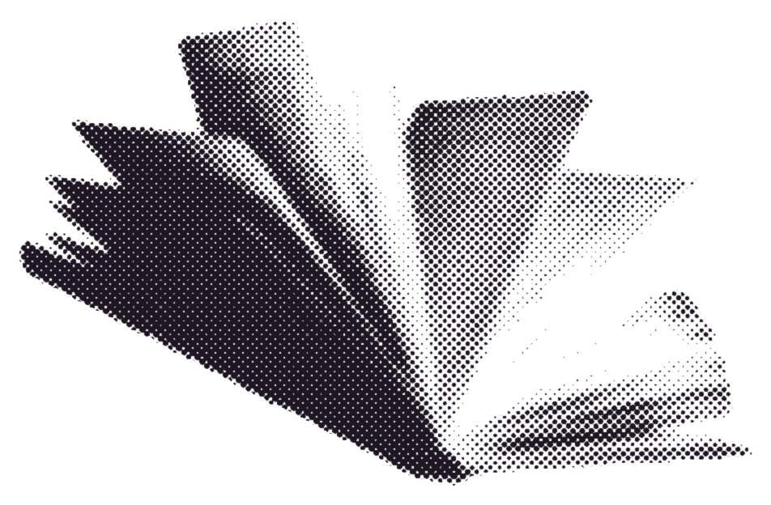
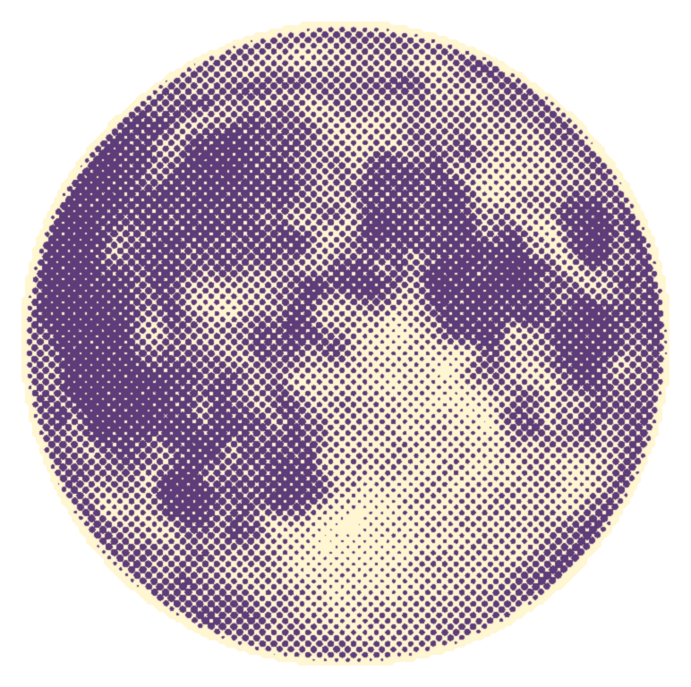
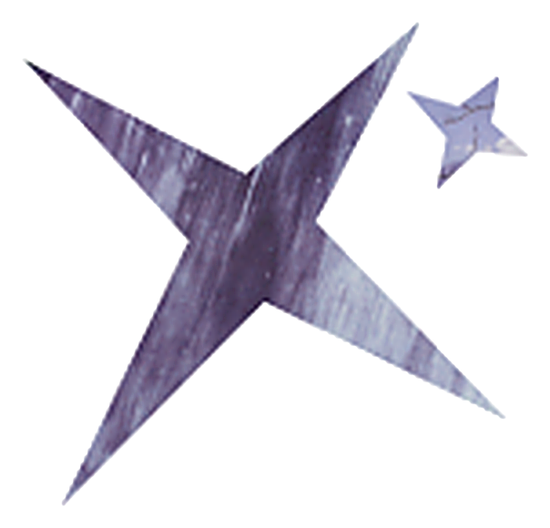
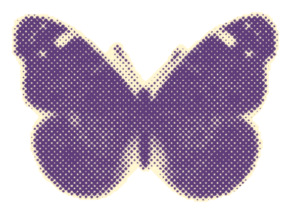
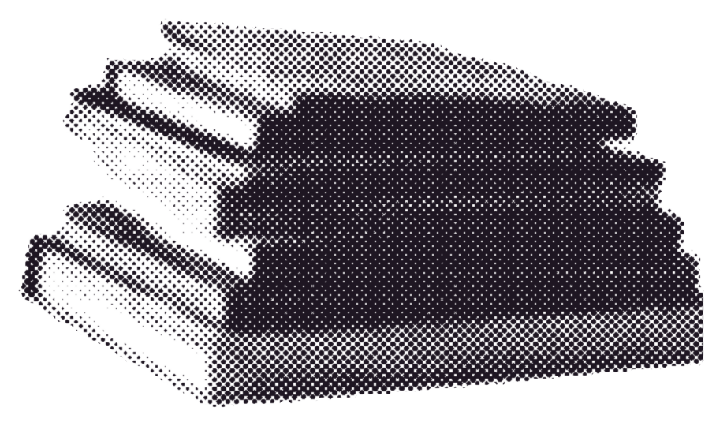
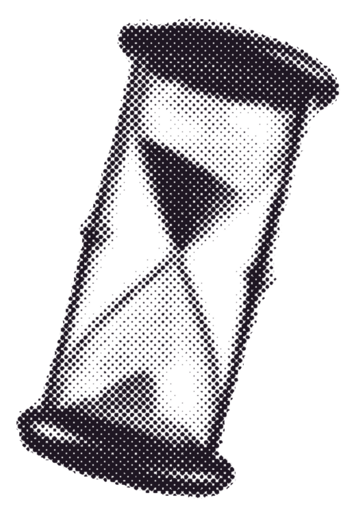
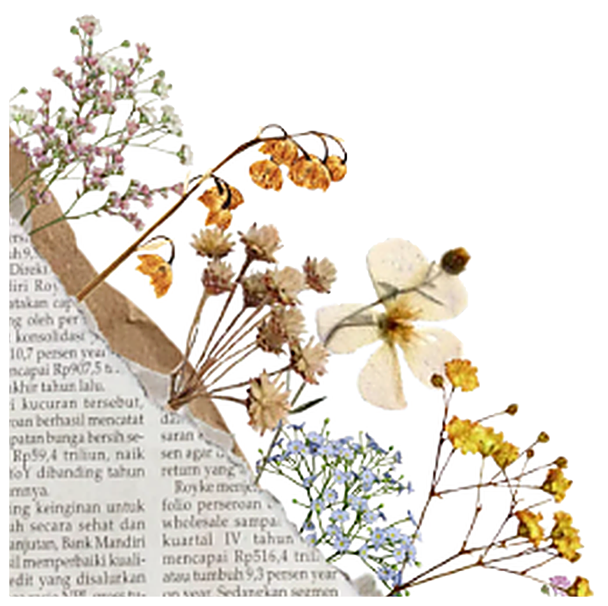

¿qué son los







para algunos es
magia
para otros…
entender
como un
herramientas
para resolver un problema
nos van llevando…
el
camino
llega de una manera…
se va
aliviada
lo que te espera
está bueno
@abuchaljacoach